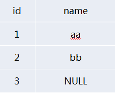
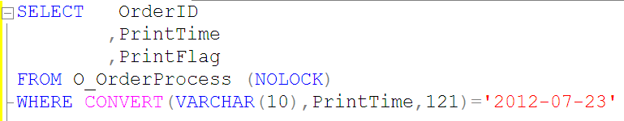
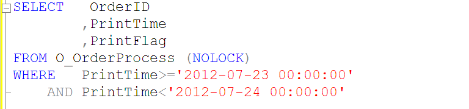
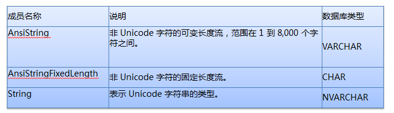
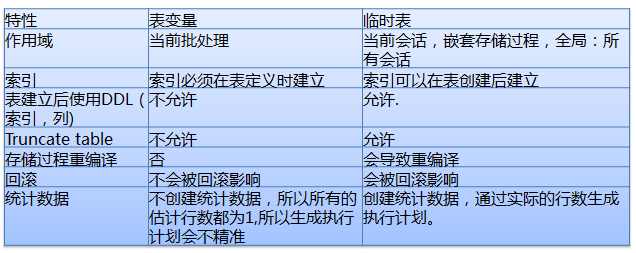

一般的な列のデータ型選択
1.文字型はvarchar/nvarcharデータ型を採用することを推奨します。
2.金額・通貨はmoneyデータ型を採用することを推奨します。
3.科学計算はnumericデータ型を採用することを推奨します。
4.自動増分IDはbigintデータ型を推奨します（データ量が多くなるとint型では収まりきらず、後々の改修が面倒になります）。
5.時間型はdatetimeデータ型を推奨します。
6.text、ntext、imageといった古いデータ型の使用は禁止します。
7.xmlデータ型、varchar(max)、nvarchar(max)の使用禁止
约束与索引
各テーブルには主キーが必要
- 各テーブルには必ず主キーを設け、エンティティの整合性を強制します。
- 単一テーブルの主キーは1つだけです（NULLおよび重複データは許可されません）。
- できるだけ単一列主キーを使用する
外部キーの使用は禁止
- 外部キーはテーブル構造の変更やデータ移行の複雑さを増します。
- 外部キーは挿入、更新のパフォーマンスに影響を与えるため、主キー・外部キー制約を確認する必要がある。
- データ整合性はプログラム側で制御する。
NULL属性
新規作成するテーブルでは、すべてのフィールドでNULLを禁止します。
（新しいテーブルでNULLを許可しないのはなぜか？
NULL値を許可するとアプリケーションの複雑さが増します。さまざまな予期しないバグを防ぐために、特定のロジックコードを追加する必要があります。
三値論理では、すべての等号（"="）を使用するクエリにisnullの判定を追加する必要があります。
Null=Null、Null!=Null、not(Null=Null)、not(Null!=Null)都为unknown，不为true）
例を挙げて説明します：
テーブル内のデータが図のようにある場合：

nameが'aa'以外のすべてのデータを検索したいとき、うっかり SELECT * FROM NULLTEST WHERE NAME<>'aa' を使ってしまうことがあります。
結果は期待と異なり、実際にはname=bbのレコードだけが検索され、name=NULLのデータレコードは検索されなかった。
では、nameが'aa'以外のすべてのデータを検索するには、ISNULL関数を使うしかありません。
SELECT * FROM NULLTEST WHERE ISNULL(NAME,1)<>'aa'
しかし、皆さんはご存じないかもしれませんISNULLは深刻なパフォーマンスボトルネックを引き起こします。そのため、多くの場合、アプリケーション層でユーザーの入力を制限し、ユーザーが有効なデータを入力してからクエリを実行するのが最善です。
既存テーブルに新しいフィールドを追加する場合、NULLを許可する必要がある（全テーブルのデータ更新を避け、長時間のロック保持によるブロッキングを防ぐ）。（これは主に既存テーブルの改修問題を考慮したものです）
インデックス設計の指針
- WHERE句で頻繁に使用される列にはインデックスを作成すべきです。
- テーブルの結合に頻繁に使用される列にはインデックスを作成すべきです。
- ORDER BY句で頻繁に使用される列にはインデックスを作成すべきです。
- 小規模なテーブル（数ページしか使用しないテーブル）にはインデックスを作成すべきではありません。完全なテーブルスキャンの方がインデックスを使ったクエリより速い場合があるためです。
- 1つのテーブルのインデックス数は6個を超えないこと。
- 選択性の低いフィールドには単一列インデックスを作成しないでください。
- 一意制約を十分に活用する
- インデックスに含まれるフィールドは5つ以内にしてください（インクルード列を含む）。
選択性の低いフィールドに単一列インデックスを作成しないでください。
- SQL SERVERはインデックスフィールドの選択性に要件があります。選択性が低すぎるとSQL SERVERはインデックスの使用をやめます。
- インデックスの作成に適さないフィールド：性別、0/1、TRUE/FALSE
- インデックスの作成に適したフィールド：ORDERID、UIDなど
一意インデックスを十分に活用する
一意インデックスは、SQL Serverにある列に完全に重複する値がないことを保証する情報を提供します。クエリアナライザーが一意インデックスで1件のレコードを見つけるとすぐに終了し、インデックスの検索を続行しません。
テーブルのインデックス数は6つ以内
テーブルのインデックス数は6つ以内にしてください（このルールは、携程（Ctrip）のDBAが実験を行った後に制定したものです...）。
- インデックスはクエリ速度を向上させますが、書き込みパフォーマンスに影響を与えます。
- テーブルのインデックスは、そのテーブルに関連するすべてのSQLを総合して作成し、できるだけ統合する。
- 複合インデックスの原則は、フィルタリング性（選択性）が高いフィールドほど先頭に置くことです。
- インデックスが多すぎると、コンパイル時間が増えるだけでなく、データベースが最適な実行計画を選択するのにも影響します。
SQL查询
- データベースでの複雑な演算を禁止する。
- SELECT * の使用禁止
- インデックス列に対する関数や計算の使用を禁止する。
- カーソルの使用禁止
- トリガーの使用禁止
- クエリ内でインデックスを指定することを禁止する。
- 変数・パラメータ・結合フィールドの型は、フィールドの型と一致させなければなりません。
- 参数化查询
- JOINの数を制限する
- SQL文の長さとIN句の個数を制限します。
- 大規模なトランザクション操作をできるだけ避ける
- 影響を受けた行数の情報返却を無効にする。
- 特別な理由がない限り、すべてのSELECT文にNOLOCKを付ける必要があります。
- UNIONの代わりにUNION ALLを使用する
- 大量のデータを照会する場合はページングまたはTOPを使用する。
- 再帰クエリの階層制限
- NOT EXISTS替代NOT IN
- 一時テーブルとテーブル変数
- ローカル変数を使用して中庸な実行計画を選択する。
- OR演算子の使用はできるだけ避ける。
- トランザクション例外処理機構を追加する。
- 出力列には2段階命名形式を使用する。
データベースでの複雑な演算を禁止する。
- XML解析
- 文字列の類似性比較
- 文字列検索（Charindex）
- 複雑な演算はプログラム側で完了させる。
SELECT * の使用禁止
- メモリ消費とネットワーク帯域幅を減らす。
- クエリオプティマイザーに、インデックスから必要な列を読み取る機会を与えます。
- テーブル構造が変更されると、クエリエラーが発生しやすくなる。
インデックス列に対する関数や計算の使用を禁止する。
WHERE句でインデックスが関数の一部となっている場合、オプティマイザーはインデックスを使用せず、全テーブルスキャンを行います。
フィールドCol1にインデックスがあると仮定すると、次のシナリオではインデックスを使用できません：
ABS[Col1]=1
[Col1]+1>9
さらに例を挙げて説明します

上記のようなクエリでは、O_OrderProcessテーブルのPrintTimeインデックスを使用できないため、次のようなクエリSQLを使用すべきです。

インデックス列に対する関数や計算の使用を禁止する。
フィールドCol1にインデックスがあると仮定すると、次のシナリオではインデックスを使用できます：
[Col1]=3.14
[Col1]>100
[Col1] BETWEEN 0 AND 99
[Col1] LIKE 'abc%'
[Col1] IN(2,3,5,7)
LIKEクエリのインデックス問題。
1.[Col1] like “abc%” –index seek これはインデックス検索を利用している
2.[Col1] like “%abc%” –index scan これはインデックス検索を利用していない
3.[Col1] like “%abc” –index scan これもインデックス検索を利用していない
上記の3つの例から、LIKE条件の先頭で曖昧（ワイルドカード）一致を使用しない方がよいことはおわかりいただけると思います。使用するとインデックスクエリを利用できません。
カーソルの使用禁止
リレーショナルデータベースは集合操作に適している。つまりWHERE句と選択列によって決定される結果セットに対して集合操作を行う。カーソルは非集合操作の手段として提供されている。一般的に、カーソルで実装される機能は、クライアントのループで実装される機能に相当することが多い。
カーソルは結果セットをサーバーのメモリに置き、ループで1件ずつレコードを処理するため、データベースリソース（特にメモリとロックリソース）の消費が非常に大きい。
（しかもカーソルは本当に複雑で、使い勝手があまり良くないので、できるだけ使用を避けましょう）
トリガーの使用禁止
トリガーはアプリケーションにとって透過的ではありません（アプリケーション層ではトリガーがいつ発火するのか分からず、発生しても分からないため、不可解に感じられます……）。
クエリ内でインデックスを指定することを禁止する。
With(index=XXX)（クエリ内でインデックスを指定する場合、通常はWith(index=XXX)を使用します）
- データの変化に伴い、クエリ文で指定されたインデックスのパフォーマンスが最適でない可能性があります。
- インデックスはアプリケーションに対して透過的であるべきです。指定したインデックスが削除されるとクエリエラーが発生し、障害対応に不利です。
- 新しく作成したインデックスはアプリケーションですぐに使用できず、コードをリリースして初めて有効になります。
变量/参数/关联字段类型必须与字段类型一致（这是我之前不太关注的）
型変換による余分なCPU消費を避けてください。大規模テーブルのスキャンでは特に深刻です。


上記の2つの図を見れば、説明しなくても皆さんおわかりいただけると思います。
データベースのフィールド型がVARCHARの場合、アプリケーションでは型をAnsiStringとし、その長さを明確に指定するのが最善です。
データベースのフィールド型がCHARの場合、アプリケーションでは型をAnsiStringFixedLengthとし、その長さを明確に指定するのが最善です。
データベースのフィールド型がNVARCHARの場合、アプリケーションでは型をStringとし、その長さを明確に指定するのが最善です。
参数化查询
以下の方法でクエリSQLをパラメータ化できます：
sp_executesql
Prepared Queries
Stored procedures
図で説明すると、はは。


JOINの数を制限する
- 単一のSQL文におけるテーブルのJOIN数は5つ以内にしてください。
- JOIN数が多すぎると、クエリアナライザーが誤った実行計画を選択する原因になります。
- JOINが多すぎると、実行計画のコンパイル時に大きなコストがかかります。
IN句内の条件数を制限する。
IN句に非常に多くの値（数千単位）を含めるとリソースを消費し、エラー8623または8632が返される可能性があります。IN句の条件数は100以内に制限してください。
大規模なトランザクション操作をできるだけ避ける
- データ更新が必要な場合にのみトランザクションを開始し、リソースロックの保持時間を短縮する。
- トランザクション例外キャッチの前処理機構を追加する。
- データベース上の分散トランザクションの使用を禁止する。
図を使って説明します

つまり、1000行のデータをすべて更新完了した後にcommit tranすべきではない。この1000行を更新している間、リソースを独占して他のトランザクションを処理できなくなることを考えてみてほしい。
影響を受けた行数の情報返却を無効にする。
SQL文でSet Nocount Onを明示的に設定し、影響を受けた行数の情報返却をキャンセルして、ネットワークトラフィックを削減します。
特別な理由がない限り、すべてのSELECT文にNOLOCKを付ける必要があります。
特別な理由がない限り、できる限りすべてのSELECT文にNOLOCKを付けます。
ダーティリードを許可します。他のトランザクションが現在のトランザクションで読み取ったデータを変更するのを防ぐ共有ロックを発行しません。他のトランザクションが設定した排他ロックは、現在のトランザクションがロックされたデータを読み取るのを妨げません。ダーティリードを許可すると同時実行操作が多くなる可能性がありますが、その代償として、後で他のトランザクションによってロールバックされるデータ変更を読み取ることになります。これによりトランザクションでエラーが発生し、コミットされていないデータがユーザーに表示されたり、ユーザーがレコードを2回見たり（または全く見られなかったり）する可能性があります。
UNIONの代わりにUNION ALLを使用する
UNIONの代わりにUNION ALLを使用する
UNIONはSQLの結果セットに対して重複排除と並べ替えを行うため、CPUやメモリなどの消費が増加する。
大量のデータを照会する場合はページングまたはTOPを使用する。
返されるレコード数を適切に制限し、IOやネットワーク帯域のボトルネックを回避します。
再帰クエリの階層制限
MAXRECURSIONを使用して、不適切な再帰CTEが無限ループに入るのを防ぎます。
一時テーブルとテーブル変数

ローカル変数を使用して中庸な実行計画を選択する。
ストアドプロシージャやクエリで、データ分布が非常に偏ったテーブルにアクセスすると、ストアドプロシージャやクエリが次善またはさらに悪い実行計画を使用することが多く、High CPUや大量のIO Readなどの問題を引き起こします。ローカル変数を使用して、誤った実行計画を防ぎます。
ローカル変数を使用する方法では、SQLはコンパイル時にこのローカル変数の値を知りません。その場合、SQLはテーブル内のデータの一般的な分布に基づいて戻り値を「推測」します。ユーザーがストアドプロシージャや文を呼び出すときに代入する変数の値が何であっても、生成されるプランは同じです。このようなプランは一般的に中庸であり、最適なプランとは限りませんが、通常は最悪のプランでもありません。
クエリ内のローカル変数が不等号演算子を使用している場合、クエリアナライザーは単純な30%の計算式で見積もります。
Estimated Rows =(Total Rows * 30)/100
クエリ内のローカル変数が等号演算子を使用している場合、クエリアナライザーは「精度 * テーブルの総レコード数」を使用して見積もります。
Estimated Rows = Density * Total Rows
OR演算子の使用はできるだけ避ける。
OR演算子の場合、通常は全表スキャンが使用される。複数のクエリに分解してUNION/UNION ALLで実現することを検討する。ここでは、クエリがインデックスを使用でき、より少ない結果セットを返すことを確認する必要がある。
トランザクション例外処理機構を追加する。
アプリケーションは予期しない例外に備え、遅滞なくRollbackを行ってください。
接続プロパティ「set xact_abort on」を設定する
出力列には2段階命名形式を使用する。
2段階命名形式：テーブル名.フィールド名。
JOIN関係を含むTSQLでは、フィールドがどのテーブルに属するかを明示しなければなりません。そうしないと、将来のテーブル構造変更後にAmbiguous column nameというプログラム互換性エラーが発生する可能性があります。
架构设计
- 读写分离
- schema解耦
- データライフサイクル
读写分离
- 設計の初期段階で読み取りと書き込みの分離を検討します。たとえ読み取りと書き込みが同じデータベースであっても、迅速なスケールアウトに役立ちます。
- 読み取りの特性に応じて、読み取りをリアルタイム読み取りと遅延可能読み取りに分け、それぞれ書き込みDBと読み取りDBに対応させます。
- 読み書き分離では、読み取りが利用できない場合に自動的に書き込み側へ切り替えることを考慮すべきである。
Schema解耦
クロスデータベースJOINの禁止
データライフサイクル
データの使用頻度に応じて、大規模テーブルを定期的にデータベースを分けてアーカイブします。
主库/归档库物理分离
ログタイプのテーブルはパーティション分割またはテーブル分割を行うべきである。
大きなテーブルはパーティション分割を行うべきである。パーティション操作によりテーブルとインデックスを複数のパーティションに分け、パーティションスイッチによって新旧パーティションの置き換えを迅速に実現し、データクレンジングの速度を速め、IOリソースの消費を大幅に削減できる。
頻繁に書き込まれるテーブルは、パーティション分割またはテーブル分割が必要である。
自動増分とLatch Lock
ラッチはSQL Server自身が内部的に取得・制御するもので、ユーザーが介入する方法はありません。メモリ内のデータ構造の一貫性を保証するために使用され、ロックレベルはページレベルロックです。
来源：http://www.codeceo.com/article/sql-server-tips.html
クリックしてノートを共有
笔记需要是本篇文章的内容扩展！
文章投稿，可点击这里
注册邀请码获取方式
分享笔记前必须登录！
注册邀请码获取方式